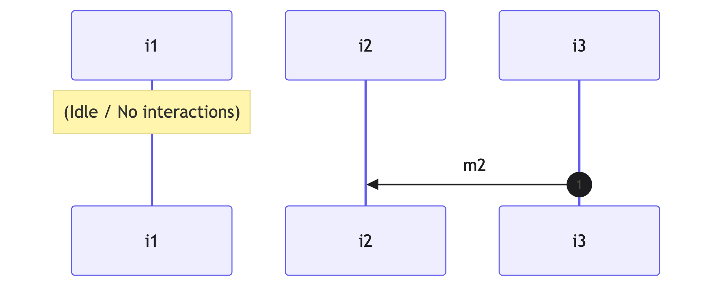
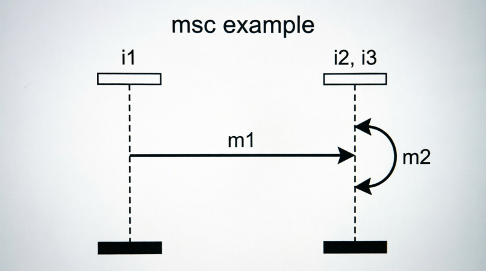
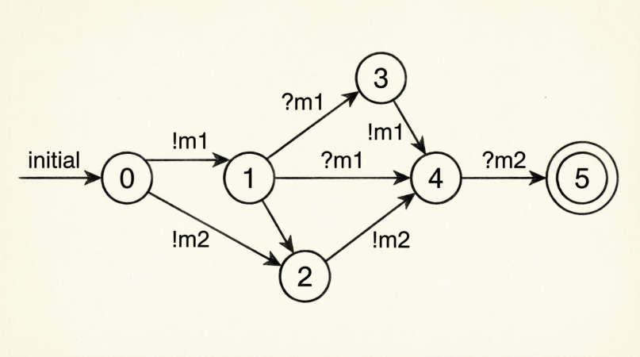

Experiments / QWen3.6-Plus-Thinking / Example 2.docx
Qwen3.6-Plus
Hi, consider this picture from a Message Sequence Chart.

Identify the events in this diagram.
Thinking completed
Based on the Message Sequence Chart (MSC) provided, the events correspond to the sending and receiving of messages between the instances (lifelines).
Here are the specific events identified in the diagram, listed in chronological order (from top to bottom):
Send Event: Instance i1 sends message m1.
Receive Event: Instance i2 receives message m1.
Send Event: Instance i3 sends message m2.
Receive Event: Instance i2 receives message m2.
So, there are a total of 4 events depicted: two message transmissions (sends) and two message receptions (receives).
Prompt:
What is the correct ordering between sending m1 and sending m2?
Thinking completed
Based on the standard rules for reading Message Sequence Charts (MSCs), where time flows vertically from top to bottom:
Sending m1 happens before sending m2.
Here is the step-by-step breakdown of the ordering:
Visual Position: The arrow for message m1 is positioned higher in the diagram than the arrow for message m2. In an MSC, events higher up occur earlier in time.
Causal Chain on Instance i2: Instance i2 receives message m1 before it receives message m2 (since the arrowhead for m1 is above the arrowhead for m2).
Global Ordering: Because the entire transaction for m1 (both the send and receive events) is drawn above the transaction for m2, the diagram implies a sequence where m1 is fully processed before m2 is even sent.
So, the chronological order of the sending events is: Send m1 →→ Send m2
Prompt:
What is the correct ordering between receiving m1 and receiving m2?
Thinking completed
Based on the vertical flow of time in the diagram (where top is earlier and bottom is later):
Receiving m1 happens before receiving m2.
Here is the visual evidence from the chart:
Look at the vertical line (lifeline) for instance i2.
The arrowhead for m1 arrives at a point higher up on the line.
The arrowhead for m2 arrives at a point lower down on the line.
Therefore, instance i2 receives message m1 first, and then later receives message m2.
Based on the diagram above, generate a message sequence chart in which message m1 is abstracted away. Please produce the resulting MSC after abstracting from m1.

Based on your request to abstract away message m1, the resulting Message Sequence Chart would remove the interaction between instance i1 and i2.
Here is the description of the resulting chart:
Instance i1: Since m1 was the only message involving i1, this instance becomes idle (an empty vertical line) or is removed from the diagram entirely, depending on the specific notation rules you are following.
Instance i2: It no longer receives m1. It only receives m2.
Instance i3: It still sends m2 to i2.
Message m2: This remains the only active message in the diagram.
Here is a representation of the resulting MSC using Mermaid syntax (which renders as a sequence diagram) and a text description:
Visual Representation (Mermaid)
mermaid
Code
Preview
(Note: In many diagramming tools, if i1 has no interactions, it might simply be omitted, leaving only i2 and i3.)
Textual Description of the New Chart
Lifelines: Three vertical lines for i1, i2, and i3 (or just two if i1 is removed).
Events:
Send: Instance i3 sends message m2.
Receive: Instance i2 receives message m2.
Ordering: There is only one message transaction now, so there are no ordering constraints relative to other messages.
Prompt:
Consider the original MSC given below. Merge instance i2 and i3; produce the message sequence chart after merging. Please draw the resulting MSC.

Based on your request to merge instances i2 and i3, the resulting Message Sequence Chart is shown above.
Here is a summary of the changes:
Merged Instance: Instances i2 and i3 are combined into a single lifeline labeled i2, i3.
Message m1: Originally sent from i1 to i2, it is now depicted as a message from i1 to the merged instance i2, i3.
Message m2: Originally sent from i3 to i2, it is now depicted as an internal self-message (a loop) within the merged instance i2, i3, since the sender and receiver are effectively the same entity.
Prompt:
Consider the original MSC given below. Please produce the set of all of its traces.
Based on the provided Message Sequence Chart (MSC), we can determine the set of all possible traces by analyzing the causal dependencies and the vertical ordering of events on each lifeline.
1. Identify Events:
!m1!m1: Send message m1 by instance i1.
?m1?m1: Receive message m1 by instance i2.
!m2!m2: Send message m2 by instance i3.
?m2?m2: Receive message m2 by instance i2.
2. Identify Constraints (Partial Order):
Message Causality: A message must be sent before it is received.
!m1→?m1!m1→?m1
!m2→?m2!m2→?m2
Vertical Ordering (Time flows top-to-bottom):
On instance i2: The reception of m1 happens before the reception of m2.
?m1→?m2?m1→?m2
3. Determine Linear Extensions (Traces): Combining the constraints, we have the following dependencies:
!m1!m1 must happen before ?m1?m1.
?m1?m1 must happen before ?m2?m2.
!m2!m2 must happen before ?m2?m2.
This implies that ?m2?m2 is the last event in any valid trace, as both ?m1?m1 and !m2!m2 must precede it (directly or indirectly).
The relative ordering of !m1!m1, ?m1?m1, and !m2!m2 has some flexibility, provided !m1!m1 comes before ?m1?m1. The event !m2!m2 (sending m2 on i3) is independent of the events on i1 and the reception on i2 until the final reception of m2.
Here are the possible valid orderings (traces):
Trace 1: m1 is fully processed before m2 is sent.
Order: !m1,?m1,!m2,?m2!m1,?m1,!m2,?m2
Trace 2: m1 is sent, then m2 is sent, then m1 is received, then m2 is received.
Order: !m1,!m2,?m1,?m2!m1,!m2,?m1,?m2
Trace 3: m2 is sent first, then m1 is sent and received, then m2 is received.
Order: !m2,!m1,?m1,?m2!m2,!m1,?m1,?m2
The set of all traces is: {(!m1,?m1,!m2,?m2),(!m1,!m2,?m1,?m2),(!m2,!m1,?m1,?m2)}{(!m1,?m1,!m2,?m2),(!m1,!m2,?m1,?m2),(!m2,!m1,?m1,?m2)}
Please draw a labelled transition system that has the same traces as the MSC. Please produce one static picture, no interactive visualisation.
Here is the labelled transition system (LTS) that has the same traces as the MSC. The diagram shows:
State 0: Initial state (marked with "initial" arrow)
States 1-4: Intermediate states
State 5: Final/accepting state (double circle)
Transitions:
From State 0: !m1 (send m1) or !m2 (send m2) can occur in any order
From State 1: After !m1, either ?m1 (receive m1) or !m2 can occur
From State 2: After !m2, either ?m1 or !m1 can occur
From State 3: After !m1 and ?m1, only !m2 can occur
From State 4: After both sends and ?m1, only ?m2 can occur
From State 5: Terminal state
This LTS captures all three valid traces from the MSC:
!m1, ?m1, !m2, ?m2
!m1, !m2, ?m1, ?m2
!m2, !m1, ?m1, ?m2
The concurrency between the two send events (!m1 and !m2) is represented by the branching from the initial state, while the causal dependencies (send before receive, and ?m1 before ?m2) are enforced by the transition structure.
